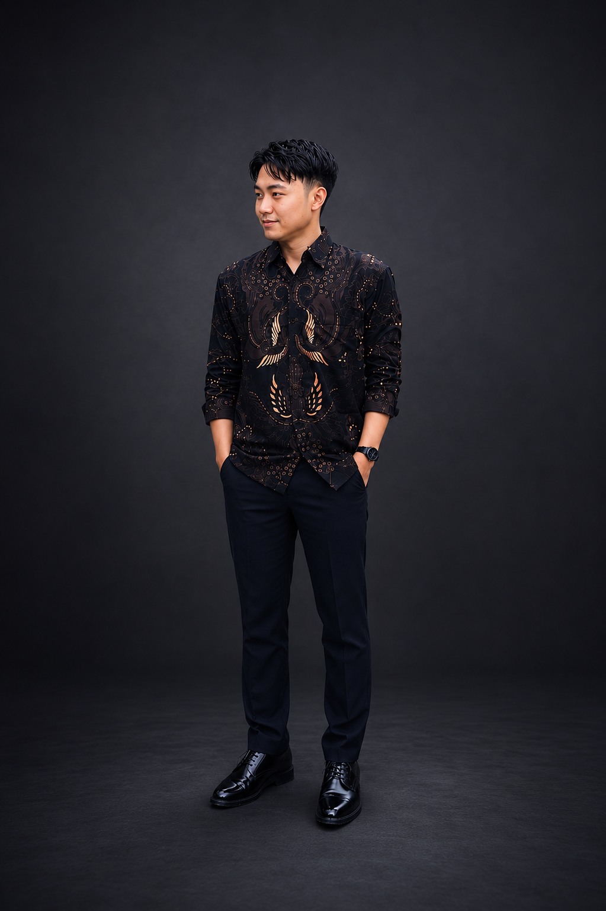

Frontend & Mobile Developer
Mahasiswa Teknik Informatika Universitas Budi Luhur semester 6 dengan passion di pengembangan Frontend Website, Mobile Apps, dan UI modern. Berpengalaman membangun project nyata dari company profile hingga sistem monitoring enterprise.

Hadi Bagus Indrawan
Universitas Budi Luhur
Teknik Informatika
Membangun antarmuka web modern dan responsive menggunakan HTML, CSS, JavaScript, Bootstrap, dan React. Fokus pada clean code dan user experience yang optimal.
Pengembangan aplikasi mobile cross-platform menggunakan React Native & Expo, terintegrasi dengan backend API, Firebase, dan Google Maps API.
Pemahaman dasar keamanan web seperti SQL Injection, XSS, dan praktik pengujian kerentanan menggunakan OWASP Juice Shop.
Terbiasa memanfaatkan AI tools untuk debugging, eksplorasi ide, memahami alur coding, dan mempercepat proses development.
Website company profile modern yang telah di-deploy ke production dengan custom domain. Dioptimasi SEO hingga terindeks dan muncul di Google Search. Desain responsive untuk semua ukuran layar.
Sistem absensi berbasis web dengan role management (Direktur, Pengurus, Karyawan). Fitur monitoring kehadiran realtime, dashboard per-role, dan tampilan responsive. Dikembangkan untuk kebutuhan operasional yayasan.
Demo Login
Email: joko321@gmail.com
Pass: joko321
Sistem monitoring kunjungan teknisi yang lahir dari pengalaman kerja langsung di lapangan. Mengubah proses manual via WhatsApp menjadi sistem digital terintegrasi. Mendukung workflow operasional: penugasan, absensi berbasis lokasi GPS, selfie dengan metadata, hingga pelaporan digital ke ERP perusahaan.
Desain frontend untuk platform pemesanan perjalanan wisata. Tampilan modern dengan layout yang clean, navigasi intuitif, dan visual yang menarik untuk pengalaman pengguna yang optimal.
Dashboard interaktif yang memvisualisasikan data pengangguran di Indonesia. Menampilkan statistik, grafik tren, dan analisis data secara visual untuk memudahkan pemahaman kondisi ketenagakerjaan.
Lulusan SMK non-programming yang memulai perjalanan teknologi dari dasar. Sebagai mahasiswa kelas karyawan, harus menyeimbangkan kerja lapangan dengan kuliah — belajar di setiap waktu luang yang tersedia.
Mengembangkan kemampuan melalui AI tools, dokumentasi, YouTube, dan praktik langsung. Membuktikan bahwa konsistensi, rasa ingin tahu, dan keberanian mencoba bisa menggantikan keterbatasan waktu formal.
Dari membangun company profile hingga sistem monitoring enterprise — setiap project mengajarkan bahwa development bukan hanya coding, tapi juga memahami kebutuhan lapangan, problem solving, dan komunikasi tim.
Saat ini terus memperdalam kemampuan technical dan soft skill, dengan fokus pada teknologi modern dan membangun sistem yang lebih profesional. Selalu terbuka untuk peluang baru dan tantangan yang lebih besar.